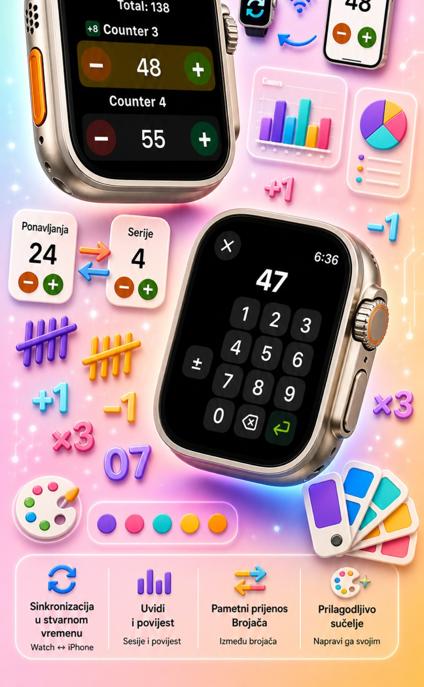
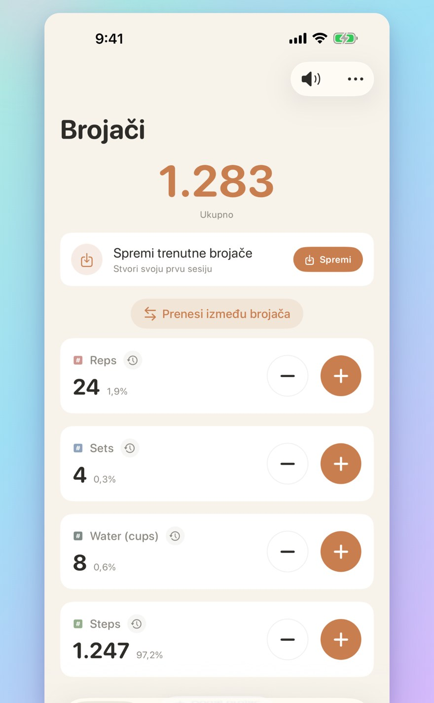
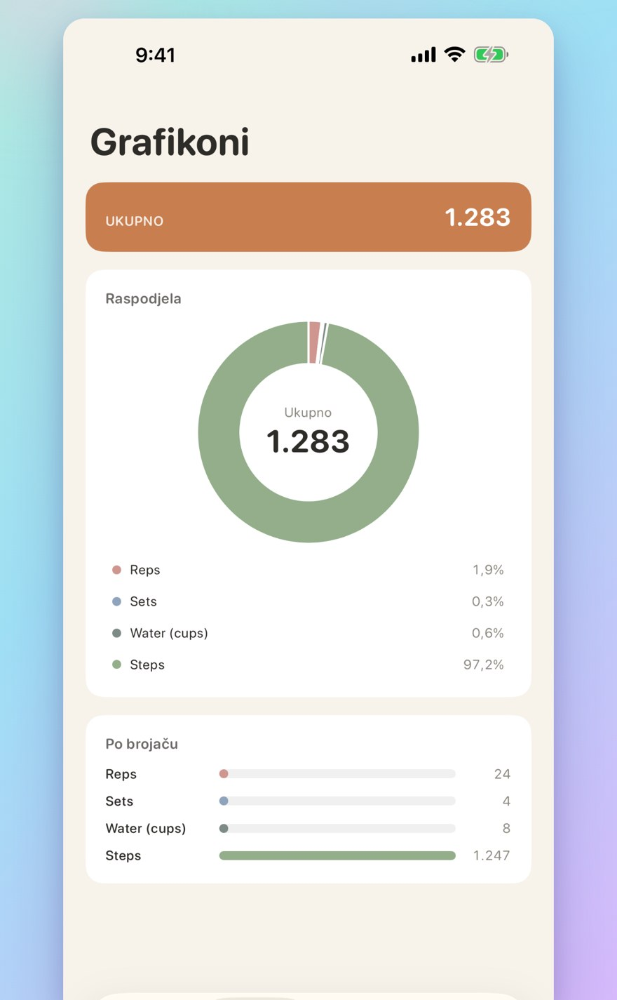

Brojač 123
Watch sync, klikovi, bodovi
Brojač i klikač za trening, krunicu, pletenje, zalihe, navike i igre. Sync s Apple Watchem, nasumični način, grafikoni i grupirana povijest.



PRILAGOĐENI BROJAČI
Izradi odvojene brojače za aktivnosti, igre, rutine ili popise
Vlastito ime i boja za svaki brojač
IZRAVNI UNOS I SKUPNE OPERACIJE
Dodirni brojač da izravno postaviš početnu vrijednost — nema nuliranja
Skupno +/-: promijeni brojač bilo kojim brojem jednim dodirom
NASUMIČNI NAČIN
Brojač može svaki dodir pretvoriti u novu vrijednost od 1 do 10
Dodaj ili oduzmi nasumične vrijednosti tipkama + i -
ZBROJEVI I GRAFIKONI
Ukupni zbroj svih brojača na prvi pogled
Prikaz u postocima: koliko svaki brojač doprinosi ukupnom
POVIJEST I DIJELJENJE
Potpuna povijest: svako dodavanje, oduzimanje i izmjena zabilježeni
Spremi setove brojača i učitaj ih u trenu
SYNC UŽIVO S APPLE WATCHEM
Promijeni brojač na iPhoneu ili Apple Watchu i vrijednosti ostaju usklađene
Stvarno nativna watchOS aplikacija — ne samo pratitelj
ZA iPhone, iPad I APPLE WATCH
Prilagodljivi rasporedi za svaku veličinu zaslona
iPad prikazuje više brojača odjednom, podržava Split View